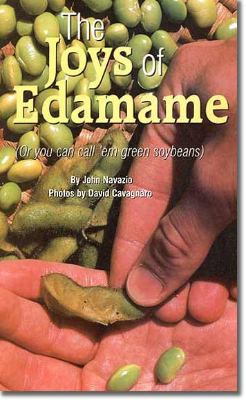
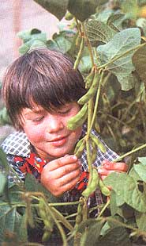
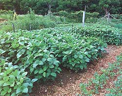
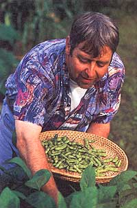
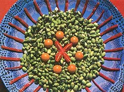
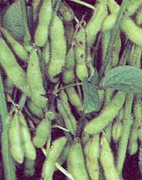

It isn't often we discover a truly new crop for our vegetable gardens. Asians have been enjoying edamame ("ed-ah-mah-may"), sometimes called "green vegetable soybeans," for many years. But this nutritious and delicious crop is still unknown to most American gardeners. As soon as you taste the sweet, nutty, melt-in-your-mouth flavor of edamame, I predict you, too, will become a devotee of this wholesome, easy-to-grow vegetable.
Edamame soybeans are different varieties than the types grown as a dry field crop for making tofu, soybean oil or other soy products. Edamame varieties are harvested while they are still green, before the pods dry, much like shelling peas. I first tried edamame at a Japanese restaurant, where it was served as an appetizer in the traditional style. The beans came to our table in a large bowl, piping hot, looking exquisite in their emerald green pods. I was with two Japanese friends, who taught me the proper etiquette for eating edamame from the pod. They showed me how to hold the pod lengthways near my lips and then pinch the outer edge of the pod, pressing the beans against the inner seam to split it so the beans popped neatly into my mouth. Eating them from the shell in a common bowl is a time-honored tradition that enhances the pleasures of social interactions with friends. You can also shell them before you serve them, or add them to stir-fry or other dishes.
There's another excellent reason to give edamame a try this summer. Many of us are eating more soy foods than ever before as we learn about the health benefits of this nutritious food. Aside from being a great source of quality protein and vitamin E, soy foods contain isoflavones, which seem to play a role in reducing the risk of heart attack, osteoporosis, breast cancer and prostate cancer.
Edamame does well in many different soil types, but make sure the spot is well drained with plenty of mature compost worked in. Soybeans are a warm-season crop, so plant the seeds when it's time to transplant tomatoes, or when the soil is at least 60 degrees. Sow eight to 10 seeds per foot in the row, at a depth of 1 to 1 1/2 inches. Edamame plants can get rather bushy, so space your rows at least 2 to 2 1/2 feet apart. All soybeans, including edamame, are legumes that host beneficial nitrogen-fixing bacteria on their roots. To take advantage of this natural nitrogen production, you can dust your seeds before planting with a bacterial inoculant for soybeans (available from most seed catalogs that offer edamame.)
Some Japanese farmers transplant this valuable crop from the greenhouse. To do this, be sure to grow the seedlings in separate pots and carefully transplant them after hardening off the plants.
Make sure your edamame bed gets full sun and give the plants the same amount of water you give peas or beans. Once the plants start yielding harvestable pods, keep the beans picked on schedule, not missing any. Remember the plant's goal is to reproduce, and they won't continue yielding if you allow them to make seed.
Harvesting edamame pods for fresh eating is like picking peas for shelling. The first sign your crop is close to harvest is the swelling of the pods. Once this starts it's a good idea to check your plants every couple of days to monitor their progress. This is important because they can quickly over ripen and become starchy. When the beans are fully formed and almost touching each other within the pods, open a few of the plumpest pods to see if the beans are fully formed, and taste a few of them raw. They should be mildly sweet and tender without any starchiness.
Iowa gardener David Cavagnaro says, "There's a very narrow harvest window, and you really have to pay attention to get the maximum tenderness and sweetness from your crop." Never let the pods turn yellow, a sure sign the beans inside are getting starchy and past their prime.
So now you've got a crop of edamame coming in, and you're finding out just how many pods those couple of rows you planted can produce. If there are more ripe pods than you can use fresh, the best way to preserve them at their peak of perfection is to freeze. Freezing edamame is almost as easy as cooking them to eat on the spot. All you do is wash them, then cook and freeze right in the pod.
For freezing, put the pods into lightly sated, boiling water, aril instead of cooking them for five to six minutes as you would when you plan to eat them fresh, reduce the cooking time to three to four minutes. When they're done, lift the pods from the boiling water and put them into a basin of ice water. This will stop the cooking process. Once all the pods are chilled, lift them from the water and pat the excess water with a clean kitchen towel. Next place them into plastic freezer bags, press the excess air out and pop them into the freezer. When you want a taste of summer, just take a bag out of the freezer, pour the contents straight into a pot of boiling water and cook for only two to three minutes.
To evaluate the edamame varieties now offered in seed catalogs, I enlisted the help of two astute gardeners in other parts of the country, gardener and photographer David Cavagnaro in Decorah, Iowa, and C.R. Lawn, a seeds person in Canaan, Maine, to augment my plantings in Bellingham, Washington. Together we tested the same five varieties: two stalwarts, 'Envy' and 'Butterbeans,' from Johnny's Selected Seeds in Albion, Maine; two Japanese newcomers to the United States, 'Sayamusume' and 'Misono Green,' from Territorial Seeds in Cottage Grove, Oregon; and the variety 'Shirofumi' from Fedco Seeds in Waterville, Maine. The three of us planted these five edamame varieties during the last week of May in our respective locations, and we all enjoyed enough warmth and sunshine to get our crops off to a running start.
By the middle of August in Iowa and Maine, and early September in Washington, we were all picking and grinning as we discovered just how delicious homegrown edamame can be. We all agreed a good edamame variety had to have a sweet, buttery flavor with a tender, but slightly crunchy texture. But there is another important attribute of good flavor. C.R. Lawn summed it up best: "There's a nutty flavor that I look for in edamame. It's the nuttiness that gives body to the flavor."
For earliness, there were two clear winners, 'Envy' and 'Shirofumi.' For an early harvest, 'Shirofurni' had the sweetest, most tender beans; it got rave reviews in all locations. But 'Envy' shouldn't be counted out. 'Envy,' which is touted as a first early variety, was easily 10 days earlier than 'Shirofumi' for me in cool, coastal Washington State. In the hotter summers of Iowa and Maine (yes, Maine can have hot weather!), it wasn't significantly earlier than 'Shirofurmi.' While 'Envy' wasn't as sweet as other edamame varieties, it did have a robust, nutty flavor, which coupled with its earliness should earn it a spot in any short-season garden.
'Sayamusume' received the real honors for flavor. It took a little longer to mature but was well worth the wait. 'Sayamusume' was about a week later in maturity than the other varieties in Iowa and Maine. Another edamame connoisseur, Steve Peters of Seeds of Change in Santa Fe, New Mexico, says, 'Sayamusume' is everything you want in edamame: It's plump, tender, sweet, with a buttery flavor, and it's consistent from pod to pod."
David Cavagnaro recognizes another plus for gardeners who "shell out" their edamame for cooking: "Both 'Sayamusume' and 'Shirofumi' have big pods with big seeds, which makes then easier to shell than the other varieties."
'Butterbeans' was the real surprise in this test. Since 'Butterbeans' is derived from a cross between an American soybean and a Japanese edamarne, I suspected its flavor and quality wouldn't match the other purebred edamame varieties. However, it did well in all locations, with a harvest window just behind 'Envy' and 'Shirofumi,' and a buttery, sweet flavor almost as good as 'Shirofumi.'
'Misono Green' received less praise than the others, as its flavor was on the bland side and it wasn't early. It did, however, yield well, setting quite a few pods.
Regionally, there were differences in these varieties' reaction to the environment. 'Envy' and 'Butterbeans' seemed to perform best in more northerly locations, with 'Envy' showing its early advantage in the cool coastal Washington summer. In trials performed in New Mexico by Seeds of Change. 'Envy' produced few harvestable pods and had yellowing leaves on spindly plants. Jeff McCormick of Garden Medicinals in Earlysville, Virginia, tried growing 'Butterbeans' a few years ago only to find an unappealing discoloration of the beans in the green-shell stage.
Margaret Crow, a homesteader near Southwest Ranches, Florida, plants her edamame in August or September for a winter crop and has had great success with 'Butterbeans,' demonstrating how a variety from another region can work if planted at the right time of year. However, she also grows 'Envy' under this regimen and its yields are still poor.
As always, the best advice is to grow at least a couple of different varieties in your garden and scrutinize the results. Obviously, a variety like 'Sayamusume,' which performed superbly in Maine, Iowa, Washington and New Mexico, should do well in most locations.
When he's not snacking on edamame, independent plant breeder John Navazio trains seed growers and develops improved vegetable varieties for organic growing at his new company, SEEDS (Sustainable Education for the Ethical Development of Seeds), in Iowa City, Iowa.
|
 Edamame makes a healthy pick-your-own snack for kids. |
 Edamame soybean plants closely resemble regular bush green beans. |
 Author John Navazio picks a plateful of edamame for his taste tests. |
|
 Fresh green soybeans have a buttery, nutty flavor. |
 Edamame plants can set lots of pods for heavy yields. |
 |